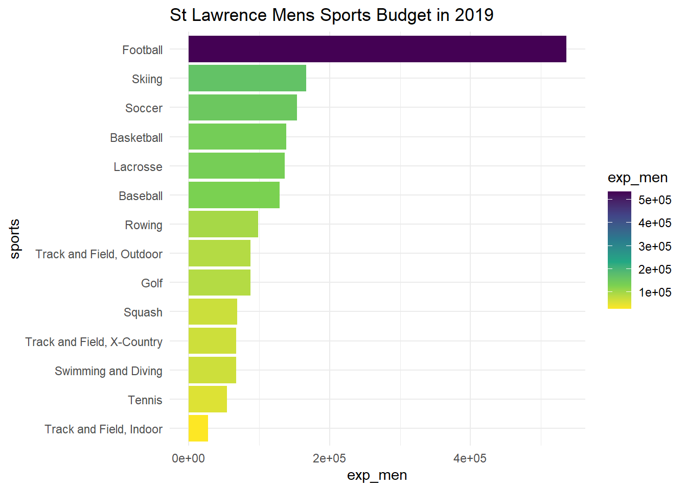
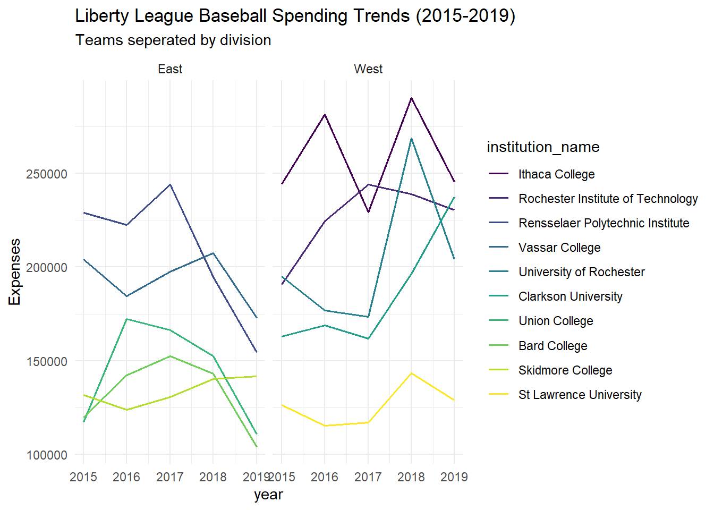

In todays age, college sports budgets are a huge topic of conversation. Most people have probably heard of the millions spent at the division 1 level, but forget about division 3 sports. Division 3 programs still require a substantial amount of money to operate. In this post, I will explore spending at the division 3 level, specifically at St. Lawrence University and other Liberty League schools. I am using data from a tidy Tuesday folder that includes every college and university’s budget on their sports programs from 2015-2019. I will be focusing on the expense variable and sport variable. There are 132,327 observations in this dataset. I will be focusing on baseball since I am currently a baseball player at St. Lawrence University. The question I will be trying to answer is: How does athletic spending at St. Lawrence University compare across sports, and how does the St. Lawrence baseball program’s spending compare to other teams in the Liberty League?
Rows: 132327 Columns: 28
── Column specification ────────────────────────────────────────────────────────
Delimiter: ","
chr (8): institution_name, city_txt, state_cd, zip_text, classification_nam...
dbl (20): year, unitid, classification_code, ef_male_count, ef_female_count,...
ℹ Use `spec()` to retrieve the full column specification for this data.
ℹ Specify the column types or set `show_col_types = FALSE` to quiet this message.
library(tidyverse)
Warning: package 'ggplot2' was built under R version 4.4.3
── Attaching core tidyverse packages ──────────────────────── tidyverse 2.0.0 ──
✔ dplyr 1.1.4 ✔ readr 2.1.5
✔ forcats 1.0.0 ✔ stringr 1.5.1
✔ ggplot2 4.0.1 ✔ tibble 3.2.1
✔ lubridate 1.9.4 ✔ tidyr 1.3.1
✔ purrr 1.0.4
── Conflicts ────────────────────────────────────────── tidyverse_conflicts() ──
✖ dplyr::filter() masks stats::filter()
✖ dplyr::lag() masks stats::lag()
ℹ Use the conflicted package (<http://conflicted.r-lib.org/>) to force all conflicts to become errors
# Remove ice hockey (D1) and filter by year. Reorder data by expenses.# drop sports with a na value for exp_men (removes womens sports)slu <- sports %>%filter(institution_name =="St Lawrence University")slu_d3mens_2019 <- slu %>%filter(sports !="Ice Hockey") %>%filter(year =="2019") %>%drop_na(exp_men) %>%mutate(sports =fct_reorder(sports,exp_men))
Figure 1.
ggplot(slu_d3mens_2019, aes(x = sports, y = exp_men)) +geom_col(aes(fill = exp_men)) +coord_flip() +scale_fill_viridis_c(direction =-1) +theme_minimal() +labs(title ="St Lawrence Mens Sports Budget in 2019")

Figure 1 shows the total expenses for each men’s Division III sport at St. Lawrence University in 2019. Football accounts for the largest share of spending, while most other programs operate with significantly smaller budgets. Baseball falls in the middle of the spending distribution among St. Lawrence men’s sports.
# create vector with just liberty league schoolsliberty_schools <-c("St Lawrence University","Rensselaer Polytechnic Institute","Union College","Ithaca College","University of Rochester","Vassar College","Clarkson University","Hobart and William Smith Colleges","Skidmore College","Rochester Institute of Technology","Bard College")# filter by baseball and NY because there are multiple "Union College".# Create division variablellbaseball <- sports %>%filter(sports =="Baseball", institution_name %in% liberty_schools) %>%filter(state_cd =="NY") %>%mutate(division =if_else(institution_name %in%c("St Lawrence University","Ithaca College","Clarkson University","Rochester Institute of Technology","University of Rochester"),"West","East")) %>%mutate(institution_name =fct_reorder(institution_name,-exp_men))
Figure 2.
ggplot(llbaseball, aes(x = year, y = exp_men)) +geom_line(aes(color = institution_name),linewidth =0.7) +scale_color_viridis_d() +theme_minimal() +facet_wrap(~division) +labs(title ="Liberty League Baseball Spending Trends (2015-2019)",subtitle ="Teams seperated by division",y ="Expenses")

Looking at Figure 2 we can see that the west division had higher baseball spending than those in the East division. Honing in on the west, we can see that Ithaca generally spent the most, while St. Lawrence spent the least. Across the conference, spending fluctuates quite a bit for most teams. We can also see that a majority of teams saw a decrease in spending from 2018-2019 which is interesting.
Conclusion:
Overall, this analysis provides a simple look at how athletic spending is distributed across men’s Division III sports at St. Lawrence University and how the baseball program compares with other teams in the Liberty League. The results show that spending varies significantly across sports, with football receiving the largest amount of spending, while most other programs operate with smaller budgets. Baseball falls in the middle of the spending distribution among St. Lawrence men’s sports, and comparing Liberty League programs shows that spending levels differ across schools as well. St. Lawrence is at the bottom for spending on baseball. This could be a factor in the program’s struggles from 2015-2019, given that teams such as Ithaca are spending over $100,000 more than St. Lawrence. Ithaca’s substantial spending could be a factor in why they have been a very successful program historically and presently. A limitation in my analysis is that the expenses did not account for differences in roster size, travel costs, etc. Additionally the data is a relatively short period and is a little outdated. If I had more data and more time, I would use more current data, and also try and predict a teams success based on expenses and other variables such as facilities, historical success, location, etc.
Connection to Class:
In class we have discussed that a column chart is a good visualization for comparing a quantitative variable against multiple categories such as sport, hence why I used it for my first visualization. I also factor reordered the data to make it so the data descended by expenses and also used a coord_flip to make it more readable. I also used a sequential color scale that is color-blind friendly to make it easier to interpret. These are all techniques we have discussed in class. For the second figure, I wanted to look at a quantitative variable for each category(team) over an interval of time. We discussed in class that a multiple line chart is one of the best visualizations for this type of comparison. I used a facet_grid function to divide the plot into 2 divisions, and then used a color scale to highlight the different teams. Overall, I tried to make the graphs easy to interpret and visually appealing since those are two major takeaways we talked about when making visualizations.